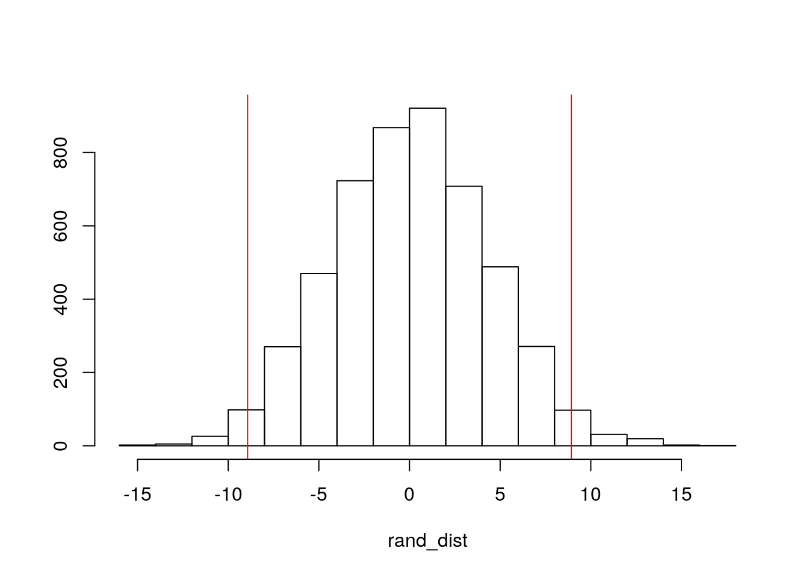

library(tidyverse)## ── Attaching packages ─────────────────────────────────────── tidyverse 1.3.0 ──## ✓ ggplot2 3.3.3 ✓ purrr 0.3.4
## ✓ tibble 3.0.4 ✓ dplyr 1.0.2
## ✓ tidyr 1.1.2 ✓ stringr 1.4.0
## ✓ readr 1.4.0 ✓ forcats 0.5.0## ── Conflicts ────────────────────────────────────────── tidyverse_conflicts() ──
## x dplyr::filter() masks stats::filter()
## x dplyr::lag() masks stats::lag()library(cluster)
library(lmtest)## Loading required package: zoo##
## Attaching package: 'zoo'## The following objects are masked from 'package:base':
##
## as.Date, as.Date.numericlibrary(ggplot2)
library(cluster)
library(plotROC)
Beaut<-read.csv("TeachingRatings.csv")One of the datasets I chose was ‘California Test Score Data’ which contains data on test performance, school characteristics, and student demographic backgrounds for K6/8 school districts in California for the 1998-1999 scholastic year. This data set contiains 420 observations on 14 variables, and the variables in this dataset include: ‘district’= ditrict code, ‘school’=school name, ‘county’=county, ‘grades’= grade span of district, ‘students’ = total enrollment, ‘teachers’= # of teachers, ‘calworks’= % qualifying for income assitance, ‘lunch’ = % qualifying for reduced lunch, ‘computer’= number of computers, ‘expenditure’= expenditure per student, ‘income’= district avg income, ‘english’= % of english learners, ‘read’= avg reading score, ‘math’= average math score. The second dataset I chose was ‘Impact of Beauty on Instructor’s Teaching Ratings’, which includes data on course evals, course characters, and prof characters for 463 courses for the 2000-2002 scholastic year here at the UNiversity of Texas at Austin! This data frame has 463 observations on 13 variables which include: ‘minority’= does the instructor belong to a minority (non-Caucasian), ‘age’=prof’s age, ‘gender’=prof’s gender, ‘credits’= is the course a single-credit elective?, ‘beauty’= rating of prof’s physical appearance by a panel of six students, averaged across six panelists, shifted to have a mean of zero, ‘eval’= course overall teaching evaluation score on a scale of 1 (unsatisfactory) to 5 (excellent), ‘division’= upper or lower division course, ‘native’= is prof a native English speaker, ‘tenure’= is the prof on tenure track?, ‘students’= # of students who participated in the evaluation, ‘allstudents’= # of students enrolled in the course, ‘prof’= prof identifier.
MANOVA
library(rstatix)##
## Attaching package: 'rstatix'## The following object is masked from 'package:stats':
##
## filterlibrary(mvtnorm)
library(ggExtra)
library(tidyverse)
library(sandwich)
library(lmtest)
library(pROC)## Type 'citation("pROC")' for a citation.##
## Attaching package: 'pROC'## The following object is masked from 'package:plotROC':
##
## ggroc## The following objects are masked from 'package:stats':
##
## cov, smooth, varlibrary(dplyr)
library(glmnet)## Loading required package: Matrix##
## Attaching package: 'Matrix'## The following objects are masked from 'package:tidyr':
##
## expand, pack, unpack## Loaded glmnet 4.0-2Beaut$eval%>%sort## [1] 2.1 2.2 2.3 2.5 2.6 2.7 2.7 2.8 2.8 2.8 2.8 2.8 2.8 2.8 2.9 2.9 2.9 2.9
## [19] 3.0 3.0 3.0 3.0 3.0 3.0 3.0 3.0 3.0 3.0 3.1 3.1 3.1 3.1 3.1 3.1 3.1 3.1
## [37] 3.1 3.1 3.2 3.2 3.2 3.2 3.2 3.2 3.2 3.3 3.3 3.3 3.3 3.3 3.3 3.3 3.3 3.3
## [55] 3.3 3.3 3.3 3.3 3.4 3.4 3.4 3.4 3.4 3.4 3.4 3.4 3.4 3.4 3.4 3.4 3.4 3.4
## [73] 3.4 3.4 3.4 3.4 3.4 3.5 3.5 3.5 3.5 3.5 3.5 3.5 3.5 3.5 3.5 3.5 3.5 3.5
## [91] 3.5 3.5 3.5 3.5 3.5 3.5 3.5 3.6 3.6 3.6 3.6 3.6 3.6 3.6 3.6 3.6 3.6 3.6
## [109] 3.6 3.6 3.6 3.6 3.6 3.6 3.6 3.6 3.6 3.6 3.6 3.6 3.6 3.6 3.6 3.7 3.7 3.7
## [127] 3.7 3.7 3.7 3.7 3.7 3.7 3.7 3.7 3.7 3.7 3.7 3.7 3.7 3.7 3.7 3.7 3.7 3.7
## [145] 3.7 3.8 3.8 3.8 3.8 3.8 3.8 3.8 3.8 3.8 3.8 3.8 3.8 3.8 3.8 3.8 3.8 3.8
## [163] 3.8 3.8 3.8 3.8 3.8 3.8 3.8 3.8 3.8 3.8 3.8 3.9 3.9 3.9 3.9 3.9 3.9 3.9
## [181] 3.9 3.9 3.9 3.9 3.9 3.9 3.9 3.9 3.9 3.9 3.9 3.9 3.9 3.9 3.9 3.9 3.9 3.9
## [199] 3.9 3.9 3.9 3.9 4.0 4.0 4.0 4.0 4.0 4.0 4.0 4.0 4.0 4.0 4.0 4.0 4.0 4.0
## [217] 4.0 4.0 4.0 4.0 4.0 4.0 4.0 4.0 4.0 4.0 4.0 4.0 4.0 4.0 4.0 4.0 4.0 4.0
## [235] 4.0 4.0 4.0 4.0 4.0 4.0 4.1 4.1 4.1 4.1 4.1 4.1 4.1 4.1 4.1 4.1 4.1 4.1
## [253] 4.1 4.1 4.1 4.1 4.1 4.1 4.1 4.1 4.1 4.2 4.2 4.2 4.2 4.2 4.2 4.2 4.2 4.2
## [271] 4.2 4.2 4.2 4.2 4.2 4.2 4.2 4.2 4.2 4.2 4.2 4.2 4.2 4.2 4.2 4.2 4.2 4.2
## [289] 4.2 4.2 4.2 4.2 4.3 4.3 4.3 4.3 4.3 4.3 4.3 4.3 4.3 4.3 4.3 4.3 4.3 4.3
## [307] 4.3 4.3 4.3 4.3 4.3 4.3 4.3 4.3 4.3 4.3 4.3 4.3 4.3 4.3 4.3 4.3 4.3 4.3
## [325] 4.3 4.3 4.4 4.4 4.4 4.4 4.4 4.4 4.4 4.4 4.4 4.4 4.4 4.4 4.4 4.4 4.4 4.4
## [343] 4.4 4.4 4.4 4.4 4.4 4.4 4.4 4.4 4.4 4.4 4.4 4.4 4.5 4.5 4.5 4.5 4.5 4.5
## [361] 4.5 4.5 4.5 4.5 4.5 4.5 4.5 4.5 4.5 4.5 4.5 4.5 4.5 4.5 4.5 4.5 4.5 4.5
## [379] 4.5 4.5 4.5 4.5 4.5 4.5 4.6 4.6 4.6 4.6 4.6 4.6 4.6 4.6 4.6 4.6 4.6 4.6
## [397] 4.6 4.6 4.6 4.6 4.6 4.6 4.6 4.6 4.6 4.6 4.6 4.6 4.6 4.7 4.7 4.7 4.7 4.7
## [415] 4.7 4.7 4.7 4.7 4.7 4.7 4.7 4.7 4.7 4.7 4.7 4.7 4.7 4.7 4.7 4.7 4.8 4.8
## [433] 4.8 4.8 4.8 4.8 4.8 4.8 4.8 4.8 4.8 4.8 4.8 4.8 4.9 4.9 4.9 4.9 4.9 4.9
## [451] 4.9 4.9 4.9 4.9 4.9 5.0 5.0 5.0 5.0 5.0 5.0 5.0 5.0samp1<-sample(Beaut$eval,replace=T)
sort(samp1)## [1] 2.1 2.1 2.2 2.6 2.7 2.7 2.7 2.8 2.8 2.8 2.8 2.8 2.8 2.8 2.8 2.8 2.9 2.9
## [19] 2.9 2.9 2.9 2.9 2.9 3.0 3.0 3.0 3.0 3.0 3.0 3.0 3.0 3.0 3.0 3.1 3.1 3.1
## [37] 3.1 3.1 3.2 3.2 3.2 3.2 3.2 3.2 3.3 3.3 3.3 3.3 3.3 3.3 3.3 3.3 3.3 3.3
## [55] 3.3 3.3 3.3 3.4 3.4 3.4 3.4 3.4 3.4 3.4 3.4 3.4 3.4 3.4 3.4 3.4 3.4 3.4
## [73] 3.4 3.4 3.4 3.4 3.5 3.5 3.5 3.5 3.5 3.5 3.5 3.5 3.5 3.5 3.5 3.5 3.5 3.5
## [91] 3.5 3.5 3.5 3.5 3.5 3.5 3.5 3.5 3.6 3.6 3.6 3.6 3.6 3.6 3.6 3.6 3.6 3.6
## [109] 3.6 3.6 3.6 3.6 3.6 3.6 3.6 3.6 3.6 3.6 3.6 3.6 3.7 3.7 3.7 3.7 3.7 3.7
## [127] 3.7 3.7 3.7 3.7 3.7 3.7 3.7 3.7 3.7 3.7 3.7 3.7 3.7 3.7 3.7 3.7 3.7 3.7
## [145] 3.8 3.8 3.8 3.8 3.8 3.8 3.8 3.8 3.8 3.8 3.8 3.8 3.8 3.8 3.8 3.8 3.8 3.8
## [163] 3.8 3.8 3.8 3.8 3.8 3.9 3.9 3.9 3.9 3.9 3.9 3.9 3.9 3.9 3.9 3.9 3.9 3.9
## [181] 3.9 3.9 3.9 3.9 3.9 3.9 3.9 3.9 3.9 3.9 3.9 3.9 3.9 3.9 3.9 3.9 3.9 4.0
## [199] 4.0 4.0 4.0 4.0 4.0 4.0 4.0 4.0 4.0 4.0 4.0 4.0 4.0 4.0 4.0 4.0 4.0 4.0
## [217] 4.0 4.0 4.0 4.0 4.0 4.0 4.0 4.0 4.0 4.0 4.0 4.0 4.0 4.0 4.0 4.0 4.1 4.1
## [235] 4.1 4.1 4.1 4.1 4.1 4.1 4.1 4.1 4.1 4.1 4.1 4.1 4.1 4.1 4.1 4.1 4.1 4.1
## [253] 4.1 4.1 4.2 4.2 4.2 4.2 4.2 4.2 4.2 4.2 4.2 4.2 4.2 4.2 4.2 4.2 4.2 4.2
## [271] 4.2 4.2 4.2 4.2 4.2 4.2 4.2 4.2 4.2 4.2 4.2 4.2 4.2 4.2 4.2 4.3 4.3 4.3
## [289] 4.3 4.3 4.3 4.3 4.3 4.3 4.3 4.3 4.3 4.3 4.3 4.3 4.3 4.3 4.3 4.3 4.3 4.3
## [307] 4.3 4.3 4.3 4.3 4.3 4.3 4.3 4.3 4.3 4.3 4.3 4.3 4.3 4.3 4.3 4.3 4.4 4.4
## [325] 4.4 4.4 4.4 4.4 4.4 4.4 4.4 4.4 4.4 4.4 4.4 4.4 4.4 4.4 4.4 4.4 4.4 4.4
## [343] 4.4 4.4 4.4 4.4 4.4 4.4 4.4 4.5 4.5 4.5 4.5 4.5 4.5 4.5 4.5 4.5 4.5 4.5
## [361] 4.5 4.5 4.5 4.5 4.5 4.5 4.5 4.5 4.5 4.5 4.5 4.5 4.6 4.6 4.6 4.6 4.6 4.6
## [379] 4.6 4.6 4.6 4.6 4.6 4.6 4.6 4.6 4.6 4.6 4.6 4.6 4.6 4.6 4.6 4.6 4.6 4.6
## [397] 4.6 4.6 4.6 4.6 4.6 4.6 4.6 4.6 4.6 4.7 4.7 4.7 4.7 4.7 4.7 4.7 4.7 4.7
## [415] 4.7 4.7 4.7 4.7 4.7 4.7 4.7 4.7 4.7 4.7 4.7 4.7 4.7 4.7 4.7 4.7 4.8 4.8
## [433] 4.8 4.8 4.8 4.8 4.8 4.8 4.8 4.8 4.8 4.9 4.9 4.9 4.9 4.9 4.9 4.9 4.9 4.9
## [451] 4.9 4.9 4.9 4.9 5.0 5.0 5.0 5.0 5.0 5.0 5.0 5.0 5.0group<- Beaut$gender
DVs<-Beaut %>% select(beauty,eval,students,allstudents)
#Multivariate normality test
sapply(split(DVs,group),mshapiro_test)## female male
## statistic 0.6901194 0.5714352
## p.value 9.877296e-19 3.318826e-25#Homogeneity of covariances test
lapply(split(DVs,group),cov)## $female
## beauty eval students allstudents
## beauty 0.66881261 0.05859899 -0.1697952 -1.170597
## eval 0.05859899 0.29030822 -1.7157230 -3.827462
## students -0.16979525 -1.71572297 631.8695215 985.233069
## allstudents -1.17059733 -3.82746233 985.2330690 1642.851864
##
## $male
## beauty eval students allstudents
## beauty 0.5732457 0.1148064 8.936763 12.671549
## eval 0.1148064 0.3098612 2.120332 1.337956
## students 8.9367630 2.1203323 3011.276022 4893.846889
## allstudents 12.6715490 1.3379563 4893.846889 8404.622841sapply(split(DVs, group), mshapiro_test)## female male
## statistic 0.6901194 0.5714352
## p.value 9.877296e-19 3.318826e-25man<-manova(cbind(beauty,eval,students,allstudents)~gender,data=Beaut)
summary(man)## Df Pillai approx F num Df den Df Pr(>F)
## gender 1 0.075551 9.3575 4 458 2.817e-07 ***
## Residuals 461
## ---
## Signif. codes: 0 '***' 0.001 '**' 0.01 '*' 0.05 '.' 0.1 ' ' 1summary.aov(man)## Response beauty :
## Df Sum Sq Mean Sq F value Pr(>F)
## gender 1 4.542 4.5416 7.4033 0.006757 **
## Residuals 461 282.806 0.6135
## ---
## Signif. codes: 0 '***' 0.001 '**' 0.01 '*' 0.05 '.' 0.1 ' ' 1
##
## Response eval :
## Df Sum Sq Mean Sq F value Pr(>F)
## gender 1 3.186 3.1859 10.562 0.001239 **
## Residuals 461 139.053 0.3016
## ---
## Signif. codes: 0 '***' 0.001 '**' 0.01 '*' 0.05 '.' 0.1 ' ' 1
##
## Response students :
## Df Sum Sq Mean Sq F value Pr(>F)
## gender 1 9725 9725.2 4.8385 0.02833 *
## Residuals 461 926593 2010.0
## ---
## Signif. codes: 0 '***' 0.001 '**' 0.01 '*' 0.05 '.' 0.1 ' ' 1
##
## Response allstudents :
## Df Sum Sq Mean Sq F value Pr(>F)
## gender 1 41050 41050 7.3843 0.006827 **
## Residuals 461 2562748 5559
## ---
## Signif. codes: 0 '***' 0.001 '**' 0.01 '*' 0.05 '.' 0.1 ' ' 1Beaut %>% group_by(gender) %>% summarize(mean(beauty), mean(eval), mean(students), mean(allstudents))## `summarise()` ungrouping output (override with `.groups` argument)## # A tibble: 2 x 5
## gender `mean(beauty)` `mean(eval)` `mean(students)` `mean(allstudents)`
## <fct> <dbl> <dbl> <dbl> <dbl>
## 1 female 0.116 3.90 31.3 44.1
## 2 male -0.0845 4.07 40.5 63.2pairwise.t.test(Beaut$beauty, Beaut$gender,p.adj="none")##
## Pairwise comparisons using t tests with pooled SD
##
## data: Beaut$beauty and Beaut$gender
##
## female
## male 0.0068
##
## P value adjustment method: nonepairwise.t.test(Beaut$eval, Beaut$gender, p.adj="none")##
## Pairwise comparisons using t tests with pooled SD
##
## data: Beaut$eval and Beaut$gender
##
## female
## male 0.0012
##
## P value adjustment method: nonepairwise.t.test(Beaut$students, Beaut$gender, p.adj="none")##
## Pairwise comparisons using t tests with pooled SD
##
## data: Beaut$students and Beaut$gender
##
## female
## male 0.028
##
## P value adjustment method: nonepairwise.t.test(Beaut$allstudents, Beaut$gender, p.adj="none")##
## Pairwise comparisons using t tests with pooled SD
##
## data: Beaut$allstudents and Beaut$gender
##
## female
## male 0.0068
##
## P value adjustment method: noneA one-way MANOVA was conducted to determine the effect of professor gender (male, female) on four dependent variables (beauty,eval,students,allstudents). The mshapiro test was significant for the data suggesting mutivariate normality, and a formal test of homogeneity of covariance also resulted in a significant p-value. No univariate or multivariate outliers were evident and MANOVA was considered to be an appropriate analysis technique.
Univariate ANOVA’s for each dependent variable were conducted as follow-up tests to the MANOVA. 1 MANOVA, 4 ANOVA, and 1 t-test were performed in order to give us the Bonferroni significance value. This resulted in the significant dependant variables being ‘beauty’ , ‘evaluation’, and ‘allstudents’. The probability of atleast one Type 1 error unadjusted resulted in a significance value of .265 , although the Bonferroni equation gave us a significance value of .0083.
Significant differences were found in the beauty,eval,and allstudents dependent variables. Beauty: df=1, F=7.4, p=.006 , eval: df=1, F=10.6, p=.001 , allstudents: df=1, F= 7.4, p=.0068.
Need this!
class_diag <- function(probs,truth){
#CONFUSION MATRIX: CALCULATE ACCURACY, TPR, TNR, PPV
if(is.character(truth)==TRUE) truth<-as.factor(truth)
if(is.numeric(truth)==FALSE & is.logical(truth)==FALSE) truth<-as.numeric(truth)-1
tab<-table(factor(probs>.5,levels=c("FALSE","TRUE")),factor(truth, levels=c(0,1)))
acc=sum(diag(tab))/sum(tab)
sens=tab[2,2]/colSums(tab)[2]
spec=tab[1,1]/colSums(tab)[1]
ppv=tab[2,2]/rowSums(tab)[2]
#CALCULATE EXACT AUC
ord<-order(probs, decreasing=TRUE)
probs <- probs[ord]; truth <- truth[ord]
TPR=cumsum(truth)/max(1,sum(truth))
FPR=cumsum(!truth)/max(1,sum(!truth))
dup <-c(probs[-1]>=probs[-length(probs)], FALSE)
TPR <-c(0,TPR[!dup],1); FPR<-c(0,FPR[!dup],1)
n <- length(TPR)
auc <- sum( ((TPR[-1]+TPR[-n])/2) * (FPR[-1]-FPR[-n]) )
data.frame(acc,sens,spec,ppv,auc)
}Randomization test:Mean difference Null Hypothesis: Mean number of students is the same for male vs. female professors Alternative Hypothesis: Mean number of students is different for male vs. female professors Firstly, we simulate our own null hypothesis by finsing the mean difference.
profage<-Beaut%>%group_by(gender)%>%select(age)## Adding missing grouping variables: `gender`profgen<-profage%>%arrange(gender)
femage<-c(24,40,42,33,25,48,23,27,25,17,19,19,20,10,21,30,22,26,12,22,10,46,54,44,35,22,64,31,59,47,19,47,33,9,16,18,60,61,23,48,86,76,77,24,24,17,14,37,18,15,40,38,40,52,49,29,37,29,28,21,13,16,24,23,20,29,25,42,34,34,21,29,39,35,34,27,14,23,23,9,30,15,31,12,10,15,7,7,14,8,17,10,12,27,20,31,17,23,33,8,16,24,7,25,24,24,20,12,25,26,24,35,21,35,18,20,27,16,17,24,14,23,19,18,23,10,10,10,7,14,109,54,51,61,102,58,46,53,19,41,25,51,18,26,28,13,174,171,10,166,17,9,14,70,49,32,35,59,45,34,50,67,38,93,36,29,23,36,30,67,36,17,15,10,16,15,15,21,14,16,20,43,14,19,18,11,18,11,7,24,52,54,28)
menage<-c(17,55,182,16,18,30,28,30,23,100,30,15,84,13,12,47,28,10,86,15,20,12,25,15,13,42,28,22,30,57,69,24,85,11,45,22,9,15,23,19,17,46,348,44,10,7,12,13,16,15,85,11,27,98,35,39,111,160,79,176,155,166,186,12,14,22,10,17,16,15,16,16,30,23,13,24,24,25,18,28,25,40,40,18,31,15,23,45,90,27,35,120,20,14,65,95,18,85,113,94,46,80,61,51,22,10,11,15,21,71,36,73,31,23,12,15,11,12,18,10,16,13,5,34,24,11,10,14,12,8,23,10,10,154,12,14,27,10,16,9,21,13,12,14,15,13,7,12,11,8,24,15,31,36,14,13,12,13,12,13,21,49,44,27,49,31,19,27,12,13,81,74,102,94,89,133,22,78,22,27,27,60,36,72,63,16,20,69,98,20,72,22,8,18,5,5,16,9,7,10,15,18,11,10,17,22,18,14,20,21,23,19,20,17,18,20,19,46,39,34,29,27,372,343,380,322,66,40,60,8,12,65,53,58,17,17,13,19,12,12,16,12,14,11,15,6,15,12,21,18,17,19,11,14,16,22,17,67,28,61,49,13,28,67,13,111,62,76,9)
old<-data.frame(gender=c(rep("female",193),rep("male",269)),attending=c(femage,menage))
head(old)## gender attending
## 1 female 24
## 2 female 40
## 3 female 42
## 4 female 33
## 5 female 25
## 6 female 48old%>%group_by(gender)%>%
summarize(means=mean(attending))%>%summarize(`mean_diff`=diff(means))## `summarise()` ungrouping output (override with `.groups` argument)## # A tibble: 1 x 1
## mean_diff
## <dbl>
## 1 8.93We find that our mean difference is 8.93, meaning females have 8.93 more students than males on average. Secondly, we simulate the distribution of the mean difference to see if the null hypothesis was true. We also compare this with the t-test.
rand_dist<-vector()
for(i in 1:5000){
new<-data.frame(attending=sample(old$attending),gender=old$gender) #scramble columns
rand_dist[i]<-mean(new[new$gender=="female",]$attending)-
mean(new[new$gender=="male",]$attending)} #compute mean difference (base R)
{hist(rand_dist,main="",ylab=""); abline(v = c(-8.93, 8.93),col="red")}
mean(rand_dist>8.9 | rand_dist< -8.9)## [1] 0.0328t.test(data=old,attending~gender)##
## Welch Two Sample t-test
##
## data: attending by gender
## t = -2.3477, df = 400.81, p-value = 0.01937
## alternative hypothesis: true difference in means is not equal to 0
## 95 percent confidence interval:
## -16.406736 -1.452308
## sample estimates:
## mean in group female mean in group male
## 31.36788 40.29740We see that based on the histogram as well as the t-test, that we reject our null hypothesis, and conclude that the mean difference in attending students is different between men and women professors.
Linear Regression (no interaction/interaction)
Thor<- lm(eval~ beauty + age, data=Beaut)
summary(Thor)##
## Call:
## lm(formula = eval ~ beauty + age, data = Beaut)
##
## Residuals:
## Min 1Q Median 3Q Max
## -1.80242 -0.36514 0.07407 0.39913 1.10206
##
## Coefficients:
## Estimate Std. Error t value Pr(>|t|)
## (Intercept) 3.9844013 0.1337296 29.794 < 2e-16 ***
## beauty 0.1340634 0.0337441 3.973 8.24e-05 ***
## age 0.0002868 0.0027148 0.106 0.916
## ---
## Signif. codes: 0 '***' 0.001 '**' 0.01 '*' 0.05 '.' 0.1 ' ' 1
##
## Residual standard error: 0.546 on 460 degrees of freedom
## Multiple R-squared: 0.03576, Adjusted R-squared: 0.03157
## F-statistic: 8.53 on 2 and 460 DF, p-value: 0.0002305Beaut$beauty_c<- Beaut$beauty - mean(Beaut$beauty)
Beaut$age_c<-Beaut$age - mean(Beaut$age)
Hulk<- lm(eval~ beauty_c*age_c, data=Beaut)
summary(Hulk)##
## Call:
## lm(formula = eval ~ beauty_c * age_c, data = Beaut)
##
## Residuals:
## Min 1Q Median 3Q Max
## -1.74828 -0.36705 0.03469 0.41307 1.15642
##
## Coefficients:
## Estimate Std. Error t value Pr(>|t|)
## (Intercept) 4.0215963 0.0261253 153.935 < 2e-16 ***
## beauty_c 0.1517305 0.0338403 4.484 9.28e-06 ***
## age_c 0.0006434 0.0026893 0.239 0.81102
## beauty_c:age_c 0.0101498 0.0031271 3.246 0.00126 **
## ---
## Signif. codes: 0 '***' 0.001 '**' 0.01 '*' 0.05 '.' 0.1 ' ' 1
##
## Residual standard error: 0.5405 on 459 degrees of freedom
## Multiple R-squared: 0.05739, Adjusted R-squared: 0.05123
## F-statistic: 9.316 on 3 and 459 DF, p-value: 5.451e-06From the above linear regression model we see that for every one unit increase in beauty score, evaluation score increases .13 on average, t=3.973, df=460, p<.001. For every 1 unit increase in age, evaluation score increases by .0002, t=.106, df=460, p>.001. From the above linear regression with interaction, we see that for professors with average beauty score and average age, the mean/predicted course evaluation is 4.02. Also, for people with average age, as beauty increased by one unit, course evaluation increased by .152, and for people with average beauty, course evaluation increased by .0006 for every one unit increase in age. The estimated slope for course evaluation for professors with average beauty and average age is .01.
Plotting the regression
ggplot(Beaut, aes(beauty,age))+ geom_smooth(method="lm", se=F, fullrange=T) + geom_point()+geom_vline(xintercept=0,lty=2)+geom_vline(xintercept=mean(Beaut$beauty))## `geom_smooth()` using formula 'y ~ x'ggplot(Beaut, aes(beauty_c,age_c))+ geom_smooth(method="lm", se=F, fullrange=T) + geom_point()+geom_vline(xintercept=0,lty=2)+geom_vline(xintercept=mean(Beaut$beauty_c))## `geom_smooth()` using formula 'y ~ x'As we see from the graph above, the slope is negative, and it does not change regardless if the dependent variabes are centered or not.
R^2
cov(Beaut$beauty, Beaut$age)/var(Beaut$beauty)## [1] -3.702748SST<-sum((Beaut$age-mean(Beaut$age))^2)
SSR<-sum((Thor$fitted.values-mean(Beaut$age))^2)
SSE<-sum(Thor$residuals^2)
SSR/SST## [1] 20.52869summary(Thor)$r.sq## [1] 0.03575917cov(Beaut$beauty, Beaut$age)/var(Beaut$beauty)## [1] -3.702748SST1<-sum((Beaut$age-mean(Beaut$age))^2)
SSR1<-sum((Hulk$fitted.values-mean(Beaut$age))^2)
SSE1<-sum(Hulk$residuals^2)
SSR1/SST1## [1] 20.52876summary(Hulk)$r.sq## [1] 0.05739382.0358 of the variation in the outcome can be explained by the model with no interaction, and .0574 for the model with interaction.
resids1<-Hulk$residuals
#Linearity
resids<-Thor$residuals
fitvals<-Thor$fitted.values
ggplot()+geom_point(aes(fitvals,resids))+geom_hline(yintercept=0, color='red')#Normality
ks.test(resids,"pnorm",mean=0,sd(resids))## Warning in ks.test(resids, "pnorm", mean = 0, sd(resids)): ties should not be
## present for the Kolmogorov-Smirnov test##
## One-sample Kolmogorov-Smirnov test
##
## data: resids
## D = 0.059249, p-value = 0.07749
## alternative hypothesis: two-sidedks.test(resids1,"pnorm",mean=0,sd(resids1))## Warning in ks.test(resids1, "pnorm", mean = 0, sd(resids1)): ties should not be
## present for the Kolmogorov-Smirnov test##
## One-sample Kolmogorov-Smirnov test
##
## data: resids1
## D = 0.058271, p-value = 0.08619
## alternative hypothesis: two-sidedinstall.packages("https://github.com/hadley/devtools/archive/v1.7.0.tar.gz",
repos=NULL, method="libcurl")## Installing package into '/stor/home/dap3574/R/x86_64-pc-linux-gnu-library/3.6'
## (as 'lib' is unspecified)#Homoskedastic
Hulk<-lm(eval~beauty_c*age_c, data=Beaut)
Thor<-lm(eval~beauty+age, data=Beaut)
bptest(Hulk)##
## studentized Breusch-Pagan test
##
## data: Hulk
## BP = 9.4514, df = 3, p-value = 0.02385bptest(Thor)##
## studentized Breusch-Pagan test
##
## data: Thor
## BP = 1.9016, df = 2, p-value = 0.3864The no interaction model passes the test of linearity, and homoskedasticty, however it does not pass the normality assumption.
#Regression results with standard and robust SE's
coeftest(Thor)[,1:2]## Estimate Std. Error
## (Intercept) 3.9844013003 0.133729629
## beauty 0.1340633769 0.033744067
## age 0.0002867947 0.002714769coeftest(Hulk)[,1:2]## Estimate Std. Error
## (Intercept) 4.0215963369 0.026125277
## beauty_c 0.1517304596 0.033840312
## age_c 0.0006434135 0.002689308
## beauty_c:age_c 0.0101497544 0.003127083coeftest(Thor, vcov=vcovHC(Thor))[,1:2]## Estimate Std. Error
## (Intercept) 3.9844013003 0.124863852
## beauty 0.1340633769 0.032095688
## age 0.0002867947 0.002560802coeftest(Hulk, vcov=vcovHC(Hulk))[,1:2]## Estimate Std. Error
## (Intercept) 4.0215963369 0.024881080
## beauty_c 0.1517304596 0.031086814
## age_c 0.0006434135 0.002529010
## beauty_c:age_c 0.0101497544 0.003023425The only difference between the standard and the robust SE’s is the standard error, which are lower with the robust SE’s.
Bootstrapped SE’s
resids1<-Hulk$residuals
fitted1<-Hulk$fitted.values
beaut_dat<-sample_frac(Beaut,replace=T)
samp_distn<-replicate(5000,{
beaut_dat<-sample_frac(Beaut,replace=T)
fit<-lm(eval~beauty_c*age_c, data=beaut_dat)
coef(fit)
})
#Estimated SE's
samp_distn%>%t%>%as.data.frame%>%summarize_all(sd)## (Intercept) beauty_c age_c beauty_c:age_c
## 1 0.02488467 0.03095159 0.002525448 0.002982719samp_distn%>%t%>%as.data.frame%>%pivot_longer(1:3)%>%group_by(name)%>%summarize(lower=quantile(value,.025), upper=quantile(value,.975))## `summarise()` ungrouping output (override with `.groups` argument)## # A tibble: 3 x 3
## name lower upper
## <chr> <dbl> <dbl>
## 1 (Intercept) 3.97 4.07
## 2 age_c -0.00441 0.00542
## 3 beauty_c 0.0875 0.211resid_resamp<-replicate(5000,{
new_resids<-sample(resids,replace=TRUE)
Beaut$new_y<-fitted1+new_resids
fit<-lm(new_y~beauty_c*age_c,data=Beaut)
coef(fit)
})
#Estimated SE
resid_resamp%>%t%>%as.data.frame%>%summarize_all(sd)## (Intercept) beauty_c age_c beauty_c:age_c
## 1 0.02626198 0.03366312 0.002726838 0.003143338#Empirical 95% CI
resid_resamp%>%t%>%as.data.frame%>%pivot_longer(1:3)%>%group_by(name)%>%summarize(lower=quantile(value,.025), upper=quantile(value,.975))## `summarise()` ungrouping output (override with `.groups` argument)## # A tibble: 3 x 3
## name lower upper
## <chr> <dbl> <dbl>
## 1 (Intercept) 3.97 4.07
## 2 age_c -0.00452 0.00608
## 3 beauty_c 0.0864 0.218#Bootstrapped (rows)
samp_distn%>%t%>%as.data.frame%>%summarize_all(sd)## (Intercept) beauty_c age_c beauty_c:age_c
## 1 0.02488467 0.03095159 0.002525448 0.002982719#Bootstrapped (residuals)
resid_resamp%>%t%>%as.data.frame%>%summarize_all(sd)## (Intercept) beauty_c age_c beauty_c:age_c
## 1 0.02626198 0.03366312 0.002726838 0.003143338The bootstrapped SEs observations and rows are larger for the interaction model, meaning they should be chosen over the standard/robust SE’s for the model.
Logistic regression model (beauty+eval variables)
Anakin<-Beaut%>%mutate(y=ifelse(gender=="female",1,0))
Anakin$gender<-factor(Anakin$gender,levels=c("female","male"))
head(Anakin)## X minority age gender credits beauty eval division native tenure students
## 1 1 yes 36 female more 0.2899157 4.3 upper yes yes 24
## 2 2 no 59 male more -0.7377322 4.5 upper yes yes 17
## 3 3 no 51 male more -0.5719836 3.7 upper yes yes 55
## 4 4 no 40 female more -0.6779634 4.3 upper yes yes 40
## 5 5 no 31 female more 1.5097940 4.4 upper yes yes 42
## 6 6 no 62 male more 0.5885687 4.2 upper yes yes 182
## allstudents prof beauty_c age_c y
## 1 43 1 0.2899156 -12.365011 1
## 2 20 2 -0.7377323 10.634989 0
## 3 55 3 -0.5719837 2.634989 0
## 4 46 4 -0.6779635 -8.365011 1
## 5 48 5 1.5097939 -17.365011 1
## 6 282 6 0.5885686 13.634989 0Han<-glm(y~beauty+eval,data=Anakin,family="binomial")
coeftest(Han)##
## z test of coefficients:
##
## Estimate Std. Error z value Pr(>|z|)
## (Intercept) 2.38820 0.72306 3.3029 0.0009569 ***
## beauty 0.42423 0.12561 3.3772 0.0007322 ***
## eval -0.68024 0.18033 -3.7723 0.0001618 ***
## ---
## Signif. codes: 0 '***' 0.001 '**' 0.01 '*' 0.05 '.' 0.1 ' ' 1exp(coeftest(Han))##
## z test of coefficients:
##
## Estimate Std. Error z value Pr(>|z|)
## (Intercept) 10.8939 2.0607 27.192 1.001
## beauty 1.5284 1.1339 29.290 1.001
## eval 0.5065 1.1976 0.023 1.000coef(Han)%>%exp%>%round(5)%>%data.frame## .
## (Intercept) 10.89392
## beauty 1.52841
## eval 0.50650Interpreting the estimates: if you have a 1 evaluation and a zero beauty score your odds of being female are 10.89, and for every 1 unit increase in beauty score your odds of being female are increased by 1.52, finally for every 1 unit ncrease in evaluation your odds of being female increase by .5.
pca1<-princomp(Anakin[c('beauty','eval')])
Anakin$predictor<-pca1$scores[,1] #grab first PC, call it "predictor"
probs<-predict(Han,type="response")
## Confusion matrix
table(predict=as.numeric(probs>.5),truth=Anakin$y)%>%addmargins## truth
## predict 0 1 Sum
## 0 229 126 355
## 1 39 69 108
## Sum 268 195 463Anakin$logit<-predict(Han,type="link")
Accuracy=(229+69)/463
Sensitivity=229/355
Specificity=69/108
Precision=229/268The proportion of correctly identified professor gender is .643 (Accuracy), the proportion of correctly identified females is .638(specificity), while the proportion of correctly identifies males is .645(sensitivity). The proportion of people classified male who actually are is .854 (precision).
### AUC
Han<-glm(y~predictor,data=Anakin,family="binomial")
Anakin$prob<-predict(Han,type="response") #save predicted probabilities
ggplot(Anakin, aes(predictor,prob))+geom_point(aes(color=y),alpha=.5,size=3)ROCplot<-ggplot(Anakin)+geom_roc(aes(d=y,m=prob), n.cuts=0)
ROCplotcalc_auc(ROCplot)## PANEL group AUC
## 1 1 -1 0.5594527The probability that the fit model will score a randomly drawn positive sample higher than a randomly drawn sample is .559(AUC), which is relatively bad tradeoff between sensitivity and specificity.
Logistic regression with multiple variables
Luke<-Beaut%>%mutate(y=ifelse(gender=="female",1,0),minor=ifelse(minority=="yes",1,0), credit=ifelse(credits=="more",1,0),div=ifelse(division=="upper",1,0),
nat=ifelse(native=="yes",1,0), ten=ifelse(tenure=="yes",1,0))
Luke$gender<-factor(Luke$gender,levels=c("female","male"))
Obi<-glm(y~minor+age+credit+eval+div+nat+ten+students+allstudents,data=Luke,family="binomial")
coeftest(Obi)##
## z test of coefficients:
##
## Estimate Std. Error z value Pr(>|z|)
## (Intercept) 5.7231376 1.3482263 4.2449 2.187e-05 ***
## minor 0.6939079 0.3239573 2.1420 0.0321957 *
## age -0.0742043 0.0117928 -6.2923 3.127e-10 ***
## credit 0.7226388 0.5045548 1.4322 0.1520778
## eval -0.7758068 0.2043151 -3.7971 0.0001464 ***
## div 0.1613862 0.2478304 0.6512 0.5149199
## nat 0.5043680 0.4767923 1.0578 0.2901302
## ten -0.7749625 0.2633994 -2.9422 0.0032593 **
## students 0.0198140 0.0114703 1.7274 0.0840930 .
## allstudents -0.0167608 0.0070831 -2.3663 0.0179663 *
## ---
## Signif. codes: 0 '***' 0.001 '**' 0.01 '*' 0.05 '.' 0.1 ' ' 1pca2<-princomp(Luke[c('beauty','eval', 'minor','age','credit','eval','div','nat','ten','students','allstudents')])
Luke$predictor<-pca2$scores[,1]
Leia<-Luke%>%mutate(prob=predict(Obi,type="response"),prediction=ifelse(prob>.5,1,0))
classify<-Leia%>%transmute(prob,prediction,truth=y)
table(prediction=classify$prediction,truth=classify$truth)%>%addmargins## truth
## prediction 0 1 Sum
## 0 204 89 293
## 1 64 106 170
## Sum 268 195 463Luke$logit<-predict(Obi,type="link")
coef(Obi)%>%exp%>%round(5)%>%data.frame## .
## (Intercept) 305.86310
## minor 2.00152
## age 0.92848
## credit 2.05986
## eval 0.46033
## div 1.17514
## nat 1.65594
## ten 0.46072
## students 1.02001
## allstudents 0.98338Accuracy1=(204+106)/463
Sensitivity1=106/195
Specificity1=204/268
Precision1=204/268The proportion of correctly identified professor gender is .670 (Accuracy), the proportion of correctly identified females is .761(specificity), while the proportion of correctly identifies males is .645(sensitivity). The proportion of people classified male who actually are is .761 (precision).
#AUC
Windu<-glm(y~predictor,data=Luke,family="binomial")
Luke$prob<-predict(Windu,type="response")
prob<-predict(Windu,type="response")
v<-class_diag(prob,Luke$y)
auc(Luke$y,prob)## Setting levels: control = 0, case = 1## Setting direction: controls > cases## Area under the curve: 0.5223ggplot(Luke, aes(predictor,prob))+geom_point(aes(color=y),alpha=.5,size=3)ROCplot1<-ggplot(classify)+geom_roc(aes(d=truth,m=prob),n.cuts=0)
ROCplot1calc_auc(ROCplot1)## PANEL group AUC
## 1 1 -1 0.7360314The AUC of the 10-fold CV is .736, which is a fair tradeoff between sensitivity and specificity.
LASSO
Mundi<-Beaut%>%mutate(y=ifelse(gender=="female",1,0))
Mundi<-Mundi[sample(nrow(Mundi)),] #randomly order rows
Mundi<-Mundi%>%select(-beauty_c,-age_c)
Mundi$gender<-NULL
folds<-cut(seq(1:nrow(Mundi)),breaks=10,labels=F) #create folds
diags<-NULL
for(i in 1:10){
## Create training and test sets
train<-Mundi[folds!=i,]
test<-Mundi[folds==i,]
truth<-test$y ## Truth labels for fold i
## Train model on training set (all but fold i)
Fisto<-glm(y~(.),data=train,family="binomial")
## Test model on test set (fold i)
probs3<-predict(Fisto,newdata = test,type="response")
## Get diagnostics for fold i
diags<-rbind(diags,class_diag(probs3,truth))
}
summarize_all(diags,mean) #average diagnostics across all k folds## acc sens spec ppv auc
## 1 0.6437558 0.5047307 0.7450608 0.5970832 0.6931601#LASSO
Mundi<-Mundi%>%select(-X)
y<-as.matrix(Mundi$y)
x<-model.matrix(y~.,data=Mundi)[,-1]
x<-scale(x)
R2D2<-glm(y~(.)^2, data=Mundi, family="binomial")## Warning: glm.fit: fitted probabilities numerically 0 or 1 occurredc3p0<-predict(R2D2,type="response")
class_diag(c3p0,Mundi$y)## acc sens spec ppv auc
## 1 0.812095 0.7538462 0.8544776 0.7903226 0.9165327cv <- cv.glmnet(x,y)
{plot(cv$glmnet.fit, "lambda", label=TRUE); abline(v = log(cv$lambda.1se)); abline(v = log(cv$lambda.min),lty=2)}cv<-cv.glmnet(x,y,family="binomial")
lasso<-glmnet(x,y,family="binomial",lambda=cv$lambda.1se)
coef(lasso)## 12 x 1 sparse Matrix of class "dgCMatrix"
## s0
## (Intercept) -3.357402e-01
## minorityyes 6.799729e-05
## age -4.360709e-01
## creditssingle .
## beauty .
## eval -1.656918e-01
## divisionupper .
## nativeyes .
## tenureyes -3.318001e-02
## students .
## allstudents -9.730798e-02
## prof .The AUC for the model with multiple variables and no lasso is .716, which is a fair tradeoff between sensitivity and specificity. The AUC for the model with lasso and the multiple variables was .917, which is a great tradeoff between specificity and sensitivity.
The variables retained were minority,age,beauty,eval,tenure,allstudents.
10 fold CV with LASSO
Darth<-Beaut%>%mutate(y=ifelse(gender=="female",1,0))
Darth<-Darth[sample(nrow(Darth)),] #randomly order rows
Darth<-Darth%>%select(y,minority,age,beauty,eval,tenure,allstudents)
folds<-cut(seq(1:nrow(Darth)),breaks=10,labels=F) #create folds
k=10
diags<-NULL
for(i in 1:k){
## Create training and test sets
train<-Darth[folds!=i,]
test<-Darth[folds==i,]
truth<-test$y ## Truth labels for fold i
## Train model on training set (all but fold i)
Maul<-glm(y~(.),data=train,family="binomial")
## Test model on test set (fold i)
quigon<-predict(Maul,newdata = test,type="response")
## Get diagnostics for fold i
diags<-rbind(diags,class_diag(quigon,truth))
}
summarize_all(diags,mean) #average diagnostics across all k folds## acc sens spec ppv auc
## 1 0.656568 0.5186617 0.753573 0.6192925 0.7126466The 10-fold lassoed CV using only the variables selected has an AUC of .712, which is fair tradeoff between sensitivity and specificity. It is lower than the lassoed 10 fold CV with all the variables included, as well as the unlassoed 10 fold CV with all variables, as well as the CV with only two variables.